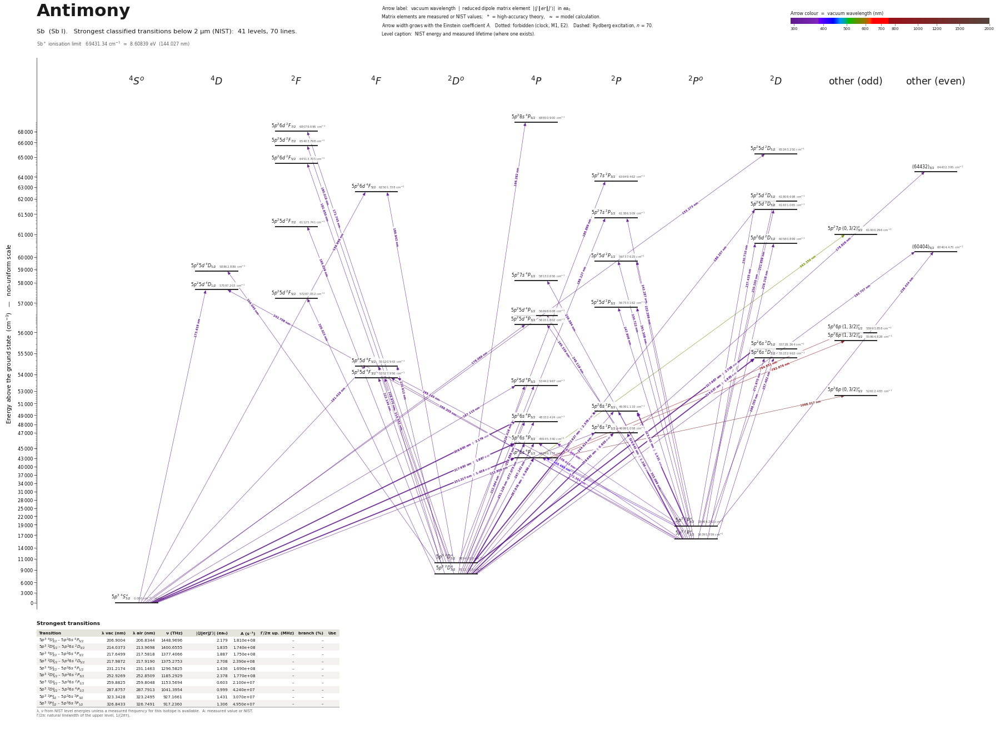

Antimony energy level diagram
Energy levels and transitions of neutral antimony (Sb I): the 70 strongest classified lines below 2 µm from the NIST Atomic Spectra Database and the 41 levels they connect, each line with its vacuum wavelength, frequency and, for 10 of them, the reduced dipole matrix element derived from the NIST transition rate. Lifetimes, hyperfine constants and isotope shifts from the literature have not been compiled for this element yet.
Hover a line or a level to isolate it, click to keep it selected. Scroll to zoom, drag to move.

Download: diagram (PDF) diagram (SVG) transitions (CSV) levels (CSV) source code

Strongest transitions of antimony
| Transition | λ vac (nm) | λ air (nm) | ν (THz) | |⟨J‖er‖J′⟩| (ea₀) | A (s⁻¹) | Γ/2π up. (MHz) | branch (%) | Use |
|---|---|---|---|---|---|---|---|---|
| 5p3 4S°3/2 – 5p26s 4P5/2 | 206.9004 | 206.8344 | 1448.9696 | 2.179 | 1.810e+08 | – | – | |
| 5p3 2D°3/2 – 5p26s 2D3/2 | 214.0373 | 213.9698 | 1400.6555 | 1.835 | 1.740e+08 | – | – | |
| 5p3 4S°3/2 – 5p26s 4P3/2 | 217.6499 | 217.5818 | 1377.4066 | 1.887 | 1.750e+08 | – | – | |
| 5p3 2D°5/2 – 5p26s 2D5/2 | 217.9872 | 217.9190 | 1375.2753 | 2.708 | 2.390e+08 | – | – | |
| 5p3 4S°3/2 – 5p26s 4P1/2 | 231.2174 | 231.1463 | 1296.5825 | 1.436 | 1.690e+08 | – | – | |
| 5p3 2D°5/2 – 5p26s 2P3/2 | 252.9269 | 252.8509 | 1185.2929 | 2.378 | 1.770e+08 | – | – | |
| 5p3 2D°3/2 – 5p26s 2P1/2 | 259.8825 | 259.8048 | 1153.5694 | 0.603 | 2.100e+07 | – | – | |
| 5p3 2D°3/2 – 5p26s 4P1/2 | 287.8757 | 287.7913 | 1041.3954 | 0.999 | 4.240e+07 | – | – | |
| 5p3 2P°3/2 – 5p26s 2P3/2 | 323.3428 | 323.2495 | 927.1661 | 1.431 | 3.070e+07 | – | – | |
| 5p3 2P°1/2 – 5p26s 2P1/2 | 326.8433 | 326.7491 | 917.2360 | 1.306 | 4.950e+07 | – | – |
λ, ν from NIST level energies unless a measured frequency for this isotope is available. A: measured value or NIST. Γ/2π: natural linewidth of the upper level, 1/(2πτ).
Listed Sb transitions below 2 µm
| Lower level | Upper level | λ vacuum (nm) | λ air (nm) | ν (THz) | Type | |⟨J‖er‖J′⟩| (ea₀) | A (s⁻¹) | Branching (%) | Source of matrix element / A |
|---|---|---|---|---|---|---|---|---|---|
| 5p3 4S°3/2 | 5p25d 2D5/2 | 153.2726 | – | 1955.9434 | E1 (intercombination) | – | – | – | – |
| 5p3 4S°3/2 | 5p26d 4F5/2 | 159.9956 | – | 1873.7547 | E1 | – | – | – | – |
| 5p3 2D°3/2 | 5p28s 4P5/2 | 166.2821 | – | 1802.9151 | E1 (intercombination) | – | – | – | – |
| 5p3 2D°5/2 | 5p26d 2F7/2 | 171.7455 | – | 1745.5619 | E1 | – | – | – | – |
| 5p3 4S°3/2 | 5p25d 4D1/2 | 173.6195 | – | 1726.7207 | E1 | – | – | – | – |
| 5p3 4S°3/2 | 5p25d 4P3/2 | 178.0887 | – | 1683.3887 | E1 | – | – | – | – |
| 5p3 2D°3/2 | (64432)3/2 | 178.8260 | – | 1676.4475 | E1 | – | – | – | – |
| 5p3 2D°5/2 | 5p25d 2F7/2 | 180.0187 | – | 1665.3405 | E1 | – | – | – | – |
| 5p3 4S°3/2 | 5p25d 4F5/2 | 181.4192 | – | 1652.4843 | E1 | – | – | – | – |
| 5p3 2D°5/2 | 5p26d 2F5/2 | 182.9502 | – | 1638.6562 | E1 | – | – | – | – |
| 5p3 2D°5/2 | 5p27s 2P3/2 | 185.8893 | – | 1612.7468 | E1 | – | – | – | – |
| 5p3 4S°3/2 | 5p25d 4P5/2 | 187.1154 | – | 1602.1798 | E1 | – | – | – | – |
| 5p3 2D°3/2 | 5p25d 2D5/2 | 188.2568 | – | 1592.4658 | E1 | – | – | – | – |
| 5p3 2D°3/2 | 5p27s 2P1/2 | 189.1275 | – | 1585.1342 | E1 | – | – | – | – |
| 5p3 2D°5/2 | 5p26d 4F5/2 | 189.9418 | – | 1578.3386 | E1 (intercombination) | – | – | – | – |
| 5p3 2D°3/2 | (60404)5/2 | 192.7066 | – | 1555.6935 | E1 | – | – | – | – |
| 5p3 2D°5/2 | 5p25d 2F7/2 | 195.0393 | – | 1537.0876 | E1 | – | – | – | – |
| 5p3 2D°5/2 | 5p25d 4D5/2 | 204.0447 | 203.9792 | 1469.2490 | E1 (intercombination) | – | – | – | – |
| 5p3 2D°3/2 | 5p25d 2F5/2 | 205.0234 | 204.9577 | 1462.2355 | E1 | – | – | – | – |
| 5p3 4S°3/2 | 5p26s 4P5/2 | 206.9004 | 206.8344 | 1448.9696 | E1 | 2.179 NIST | 1.810e+08 NIST | – | NIST ASD (accuracy n/a) |
| 5p3 4S°3/2 | 5p26s 2P1/2 | 212.8064 | 212.7393 | 1408.7565 | E1 (intercombination) | – | – | – | – |
| 5p3 2D°3/2 | 5p26s 2D3/2 | 214.0373 | 213.9698 | 1400.6555 | E1 | 1.835 NIST | 1.740e+08 NIST | – | NIST ASD (accuracy n/a) |
| 5p3 2D°3/2 | 5p25d 4F5/2 | 214.5517 | 214.4841 | 1397.2972 | E1 (intercombination) | – | – | – | – |
| 5p3 4S°3/2 | 5p26s 4P3/2 | 217.6499 | 217.5818 | 1377.4066 | E1 | 1.887 NIST | 1.750e+08 NIST | – | NIST ASD (accuracy n/a) |
| 5p3 2D°5/2 | 5p26s 2D5/2 | 217.9872 | 217.9190 | 1375.2753 | E1 | 2.708 NIST | 2.390e+08 NIST | – | NIST ASD (accuracy n/a) |
| 5p3 2P°1/2 | 5p25d 2D3/2 | 220.1996 | 220.1309 | 1361.4577 | E1 | – | – | – | – |
| 5p3 2D°5/2 | 5p25d 4F5/2 | 220.9118 | 220.8430 | 1357.0683 | E1 (intercombination) | – | – | – | – |
| 5p3 2D°3/2 | 5p25d 4F3/2 | 222.1441 | 222.0749 | 1349.5407 | E1 (intercombination) | – | – | – | – |
| 5p3 2P°1/2 | 5p27s 2P1/2 | 222.2659 | 222.1968 | 1348.8007 | E1 | – | – | – | – |
| 5p3 2D°3/2 | 5p25d 4P5/2 | 222.5643 | 222.4951 | 1346.9928 | E1 (intercombination) | – | – | – | – |
| 5p3 2P°1/2 | 5p26d 2D3/2 | 226.3184 | 226.2484 | 1324.6492 | E1 | – | – | – | – |
| 5p3 2D°5/2 | 5p25d 4F3/2 | 228.9695 | 228.8989 | 1309.3117 | E1 (intercombination) | – | – | – | – |
| 5p3 2D°5/2 | 5p25d 4P5/2 | 229.4159 | 229.3453 | 1306.7638 | E1 (intercombination) | – | – | – | – |
| 5p3 2P°3/2 | 5p25d 2D3/2 | 230.7098 | 230.6388 | 1299.4353 | E1 | – | – | – | – |
| 5p3 2P°1/2 | 5p25d 2P1/2 | 230.7217 | 230.6507 | 1299.3684 | E1 | – | – | – | – |
| 5p3 4S°3/2 | 5p26s 4P1/2 | 231.2174 | 231.1463 | 1296.5825 | E1 | 1.436 NIST | 1.690e+08 NIST | – | NIST ASD (accuracy n/a) |
| 5p3 2P°3/2 | 5p25d 2D5/2 | 231.6592 | 231.5880 | 1294.1100 | E1 | – | – | – | – |
| 5p3 2P°3/2 | 5p26d 2D3/2 | 237.4355 | 237.3631 | 1262.6268 | E1 | – | – | – | – |
| 5p3 2P°3/2 | (60404)5/2 | 238.4343 | 238.3616 | 1257.3377 | E1 | – | – | – | – |
| 5p3 2P°1/2 | 5p27s 4P1/2 | 239.5939 | 239.5209 | 1251.2527 | E1 (intercombination) | – | – | – | – |
| 5p3 2P°3/2 | 5p25d 2P1/2 | 242.2867 | 242.2131 | 1237.3461 | E1 | – | – | – | – |
| 5p3 2P°1/2 | 5p25d 4D1/2 | 242.7076 | 242.6339 | 1235.2002 | E1 (intercombination) | – | – | – | – |
| 5p3 2D°3/2 | 5p26s 2P3/2 | 244.6243 | 244.5502 | 1225.5218 | E1 | – | – | – | – |
| 5p3 2P°1/2 | 5p25d 2P3/2 | 247.9064 | 247.8315 | 1209.2969 | E1 | – | – | – | – |
| 5p3 2P°1/2 | 5p25d 4P1/2 | 248.1190 | 248.0440 | 1208.2610 | E1 (intercombination) | – | – | – | – |
| 5p3 2D°3/2 | 5p26s 4P5/2 | 251.1282 | 251.0526 | 1193.7825 | E1 (intercombination) | – | – | – | – |
| 5p3 2D°5/2 | 5p26s 2P3/2 | 252.9269 | 252.8509 | 1185.2929 | E1 | 2.378 NIST | 1.770e+08 NIST | – | NIST ASD (accuracy n/a) |
| 5p3 2P°1/2 | 5p26s 2D3/2 | 257.4824 | 257.4053 | 1164.3221 | E1 | – | – | – | – |
| 5p3 2D°3/2 | 5p26s 2P1/2 | 259.8825 | 259.8048 | 1153.5694 | E1 | 0.603 NIST | 2.100e+07 NIST | – | NIST ASD (accuracy n/a) |
| 5p3 2D°5/2 | 5p26s 4P5/2 | 259.8860 | 259.8084 | 1153.5536 | E1 (intercombination) | – | – | – | – |
| 5p3 2P°3/2 | 5p25d 2P3/2 | 261.3084 | 261.2304 | 1147.2746 | E1 | – | – | – | – |
| 5p3 2P°3/2 | 5p25d 4P3/2 | 265.3393 | 265.2603 | 1129.8458 | E1 (intercombination) | – | – | – | – |
| 5p3 2D°3/2 | 5p26s 4P3/2 | 267.1424 | 267.0630 | 1122.2196 | E1 (intercombination) | – | – | – | – |
| 5p3 2P°3/2 | 5p26s 2D5/2 | 268.3551 | 268.2754 | 1117.1485 | E1 | – | – | – | – |
| 5p3 2P°1/2 | 5p25d 4F3/2 | 269.3052 | 269.2252 | 1113.2072 | E1 (intercombination) | – | – | – | – |
| 5p3 2P°3/2 | 5p26s 2D3/2 | 271.9700 | 271.8894 | 1102.2997 | E1 | – | – | – | – |
| 5p3 2D°5/2 | 5p26s 4P3/2 | 277.0749 | 276.9931 | 1081.9906 | E1 (intercombination) | – | – | – | – |
| 5p3 2P°3/2 | 5p25d 4F3/2 | 285.1948 | 285.1110 | 1051.1849 | E1 (intercombination) | – | – | – | – |
| 5p3 2D°3/2 | 5p26s 4P1/2 | 287.8757 | 287.7913 | 1041.3954 | E1 (intercombination) | 0.999 NIST | 4.240e+07 NIST | – | NIST ASD (accuracy n/a) |
| 5p3 2P°1/2 | 5p26s 2P3/2 | 303.0691 | 302.9809 | 989.1884 | E1 | – | – | – | – |
| 5p3 2P°3/2 | 5p26s 2P3/2 | 323.3428 | 323.2495 | 927.1661 | E1 | 1.431 NIST | 3.070e+07 NIST | – | NIST ASD (accuracy n/a) |
| 5p3 2P°1/2 | 5p26s 2P1/2 | 326.8433 | 326.7491 | 917.2360 | E1 | 1.306 NIST | 4.950e+07 NIST | – | NIST ASD (accuracy n/a) |
| 5p3 2P°1/2 | 5p26s 4P3/2 | 338.4097 | 338.3125 | 885.8861 | E1 (intercombination) | – | – | – | – |
| 5p3 2P°3/2 | 5p26s 4P3/2 | 363.8859 | 363.7823 | 823.8638 | E1 (intercombination) | – | – | – | – |
| 5p3 2P°1/2 | 5p26s 4P1/2 | 372.3843 | 372.2784 | 805.0620 | E1 (intercombination) | – | – | – | – |
| 5p3 2P°3/2 | 5p26s 4P1/2 | 403.4676 | 403.3537 | 743.0397 | E1 (intercombination) | – | – | – | – |
| 5p26s 4P1/2 | 5p27p (0,3/2)°3/2 | 563.3498 | 563.1935 | 532.1604 | E1 | – | – | – | – |
| 5p26s 4P1/2 | 5p26p (1,3/2)°1/2 | 784.6509 | 784.4351 | 382.0711 | E1 | – | – | – | – |
| 5p26s 4P1/2 | 5p26p (1,3/2)°3/2 | 792.6762 | 792.4582 | 378.2029 | E1 | – | – | – | – |
| 5p26s 4P1/2 | 5p26p (0,3/2)°3/2 | 1068.0171 | 1067.7246 | 280.7001 | E1 | – | – | – | – |
Reduced dipole matrix elements follow the convention A = ω³|d|²/(3πε₀ħc³(2J′+1)), with J′ the upper level. Tags show where a number comes from: measured, NIST compilation, high-accuracy theory, or a model calculation.
Sb energy levels
| Level | Energy (cm⁻¹) | J | Parity | Lifetime | gJ | Hyperfine A (MHz) | Hyperfine B (MHz) | Lifetime source | Hyperfine source |
|---|---|---|---|---|---|---|---|---|---|
| 5p3 4S°3/2 | 0.000 | 3/2 | odd | stable | 1.967 | – | – | – | – |
| 5p3 2D°3/2 | 8512.125 | 3/2 | odd | – | 0.889 | – | – | – | – |
| 5p3 2D°5/2 | 9854.018 | 5/2 | odd | – | 1.205 | – | – | – | – |
| 5p3 2P°1/2 | 16395.359 | 1/2 | odd | – | 0.688 | – | – | – | – |
| 5p3 2P°3/2 | 18464.202 | 3/2 | odd | – | 1.277 | – | – | – | – |
| 5p26s 4P1/2 | 43249.337 | 1/2 | even | – | 2.332 | – | – | – | – |
| 5p26s 4P3/2 | 45945.340 | 3/2 | even | – | 1.713 | – | – | – | – |
| 5p26s 2P1/2 | 46991.058 | 1/2 | even | – | 1.004 | – | – | – | – |
| 5p26s 4P5/2 | 48332.424 | 5/2 | even | – | 1.547 | – | – | – | – |
| 5p26s 2P3/2 | 49391.133 | 3/2 | even | – | 1.277 | – | – | – | – |
| 5p26p (0,3/2)°3/2 | 52612.483 | 3/2 | odd | – | – | – | – | – | – |
| 5p25d 4P5/2 | 53442.967 | 5/2 | even | – | – | – | – | – | – |
| 5p25d 4F3/2 | 53527.956 | 3/2 | even | – | – | – | – | – | – |
| 5p25d 4F5/2 | 55120.943 | 5/2 | even | – | – | – | – | – | – |
| 5p26s 2D3/2 | 55232.963 | 3/2 | even | – | 0.991 | – | – | – | – |
| 5p26s 2D5/2 | 55728.264 | 5/2 | even | – | 1.277 | – | – | – | – |
| 5p26p (1,3/2)°3/2 | 55864.828 | 3/2 | odd | – | – | – | – | – | – |
| 5p26p (1,3/2)°1/2 | 55993.858 | 1/2 | odd | – | – | – | – | – | – |
| 5p25d 4P3/2 | 56151.802 | 3/2 | even | – | 1.302 | – | – | – | – |
| 5p25d 4P1/2 | 56698.608 | 1/2 | even | – | – | – | – | – | – |
| 5p25d 2P3/2 | 56733.162 | 3/2 | even | – | 1.311 | – | – | – | – |
| 5p25d 2F5/2 | 57287.052 | 5/2 | even | – | – | – | – | – | – |
| 5p25d 4D1/2 | 57597.203 | 1/2 | even | – | – | – | – | – | – |
| 5p27s 4P1/2 | 58132.656 | 1/2 | even | – | – | – | – | – | – |
| 5p25d 4D5/2 | 58862.889 | 5/2 | even | – | – | – | – | – | – |
| 5p25d 2P1/2 | 59737.625 | 1/2 | even | – | – | – | – | – | – |
| (60404)5/2 | 60404.475 | 5/2 | even | – | – | – | – | – | – |
| 5p26d 2D3/2 | 60580.899 | 3/2 | even | – | – | – | – | – | – |
| 5p27p (0,3/2)°3/2 | 61000.296 | 3/2 | odd | – | – | – | – | – | – |
| 5p25d 2F7/2 | 61125.741 | 7/2 | even | – | – | – | – | – | – |
| 5p27s 2P1/2 | 61386.509 | 1/2 | even | – | – | – | – | – | – |
| 5p25d 2D5/2 | 61631.065 | 5/2 | even | – | – | – | – | – | – |
| 5p25d 2D3/2 | 61808.698 | 3/2 | even | – | – | – | – | – | – |
| 5p26d 4F5/2 | 62501.728 | 5/2 | even | – | – | – | – | – | – |
| 5p27s 2P3/2 | 63649.462 | 3/2 | even | – | – | – | – | – | – |
| (64432)3/2 | 64432.395 | 3/2 | even | – | – | – | – | – | – |
| 5p26d 2F5/2 | 64513.705 | 5/2 | even | – | – | – | – | – | – |
| 5p25d 2D5/2 | 65243.250 | 5/2 | even | – | – | – | – | – | – |
| 5p25d 2F7/2 | 65403.798 | 7/2 | even | – | – | – | – | – | – |
| 5p26d 2F7/2 | 68079.696 | 7/2 | even | – | – | – | – | – | – |
| 5p28s 4P5/2 | 68650.900 | 5/2 | even | – | – | – | – | – | – |
Sb⁺ ionisation limit 69431.34 cm⁻¹ = 8.60839 eV (144.027 nm)
Sources
Atoms with measured data
- Lithium-632 levels, 85 lines
- Lithium-732 levels, 85 lines
- Beryllium-915 levels, 24 lines
- Sodium-2336 levels, 106 lines
- Magnesium-2418 levels, 61 lines
- Magnesium-2518 levels, 61 lines
- Potassium-3934 levels, 84 lines
- Potassium-4034 levels, 84 lines
- Potassium-4134 levels, 84 lines
- Calcium-4035 levels, 61 lines
- Calcium-4335 levels, 61 lines
- Rubidium-8536 levels, 94 lines
- Rubidium-8736 levels, 94 lines
- Strontium-8740 levels, 70 lines
- Strontium-8840 levels, 70 lines
- Caesium-13331 levels, 79 lines
- Barium-13744 levels, 89 lines
- Barium-13844 levels, 89 lines
- Dysprosium-16339 levels, 55 lines
- Dysprosium-16439 levels, 55 lines
- Ytterbium-17118 levels, 26 lines
- Ytterbium-17418 levels, 26 lines